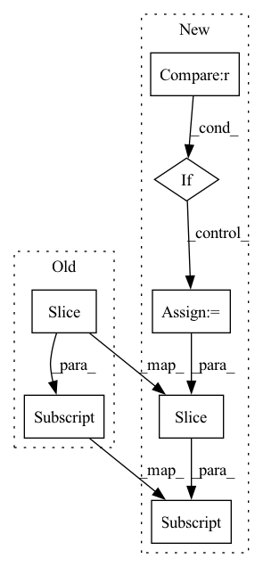

Pattern ID :20359
Before Change
Return the median of the latest `window_size` values in the buffer.
return np.median([x[0] for x in self._data[-window_size:] ])
def avg(self, window_size):
After Change
Returns:
median (number): the median of the latest `window_size` values
if window_size is None :
window_size = len(self._data[key])
return torch.Tensor(self._data[key][-window_size:] ).median().item()
def avg(self, key, window_size=None):
In pattern: SUPERPATTERN
Frequency: 3
Non-data size: 7
Instances Fragment ID: 66030693
Project Name: yeliudev/nncore
Commit Name: 37679e2ae736e55218a505c486bea6ae404031f8
Time: 2020-03-18
Author: goolhanrry@gmail.com
File Name: nncore/engine/buffer.py
M Class Name: Buffer
N Class Name: Buffer
M Method Name: median(3)
N Method Name: median(2)
M Parent Class: object
N Parent Class: object
M File Name: nncore/engine/buffer.py
N File Name: nncore/engine/buffer.py
M Start Line: 49
M End Line: 49
N Start Line: 89
N End Line: 104
Before Change
scores = torch.ones(batch_size, 1 + self.n_neg, device=y.device) //positive sample in the first position.
y_expand = torch.cat((y, y))
for i in range(batch_size):
scores[i, :] = torch.cat((y_expand[i].view(-1), y_expand[i + 1:i + 1 + self.n_neg] ))
scores = scores / self.temperature
return scores //(batch_size, 4)
After Change
sample_weight = self.embedding(x, self.sample_weight_feature, squeeze_dim=True).squeeze(1) // (batch_size)
scores = pred - torch.log(sample_weight) //Sampling Bias Corrected, using broadcast
if user_embedding.shape[0] * (self.n_neg + 1) != self.index0.shape[0] : // last batch
batch_size = user_embedding.shape[0]
index0 = self.index0[:batch_size * (self.n_neg + 1)]
index1 = self.index1[:batch_size * (self.n_neg + 1)]
index0[np.where(index0 >= batch_size)] -= batch_size
index1[np.where(index1 >= batch_size)] -= batch_size
Fragment ID: 66030690
Project Name: datawhalechina/torch-rechub
Commit Name: d0461152ddffad7a6bf7c7532b7b540094623e95
Time: 2022-06-07
Author: icewwl@163.com
File Name: torch_rechub/models/matching/youtube_sbc.py
M Class Name: YoutubeSBC
N Class Name: YoutubeSBC
M Method Name: forward(2)
N Method Name: forward(2)
M Parent Class: torch.nn.Module
N Parent Class: torch.nn.Module
M File Name: torch_rechub/models/matching/youtube_sbc.py
N File Name: torch_rechub/models/matching/youtube_sbc.py
M Start Line: 55
M End Line: 80
N Start Line: 60
N End Line: 87
Before Change
Return the mean of the latest `window_size` values in the buffer.
return np.mean([x[0] for x in self._data[-window_size:] ])
def global_avg(self):
After Change
Returns:
avg (number): the average of the latest `window_size` values
if window_size is None :
window_size = len(self._data[key])
return torch.Tensor(self._data[key][-window_size:] ).mean().item()
Fragment ID: 66030689
Project Name: yeliudev/nncore
Commit Name: 37679e2ae736e55218a505c486bea6ae404031f8
Time: 2020-03-18
Author: goolhanrry@gmail.com
File Name: nncore/engine/buffer.py
M Class Name: Buffer
N Class Name: Buffer
M Method Name: avg(3)
N Method Name: avg(2)
M Parent Class: object
N Parent Class: object
M File Name: nncore/engine/buffer.py
N File Name: nncore/engine/buffer.py
M Start Line: 55
M End Line: 55
N Start Line: 106
N End Line: 121